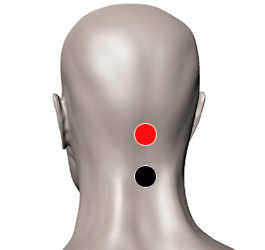

Newcastle
Par
bulbo - cerebelo

Generalidades:
Según la medicina ortodoxa sólo lo padecen personas que están en contacto directo con las aves y causa leves trastornos como gripe y conjuntivitis. Sin embargo el doctor Goiz ha encontrado los siguientes síntomas: Alteraciones del Sistema nervioso central: mareos, marcha tonta y tambaleante, problemas de equilibrio, conducta agresiva, ataxia cerebelosa (falta de coordinación de movimientos, en especial extremidades), apnea (suspensión temporal de la respiración), insuficiencia respiratoria, hipoxia.
Transmisión
Es transmitido por la aves. Por comer aves contaminadas, sobre todo cuando es pollo frito tipo Kentuchy (sin hervir). También común en personas que están en contacto directo con las aves en la industria avícola.